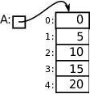

CPSC 124, Fall 2021:
Sample Answers to Final Exam Study Guide Questions
Question 1. Some short programming exercises...
a) Use a for loop to print out all the multiples of 5 from 5 to 100, with each number on a separate line.
b) Write a program segment that gets an integer from the user in the range 1 to 100 (inclusive). Use a while loop to make sure that the number that you get is actually in the specified range. (You can use TextIO for input.)
c) Write a program segment that simulates rolling a pair of dice 1,000,000 times and counts how many times the dice come up doubles (that is, how many times the values on the two dice are the same).
d) Write a code segment to simulate the following experiment: Toss a coin over and over, until it has come up heads ten times. At the end, print the number of times that the coin has come up tails.
Answer.
a) for (int i = 5; i <= 100; i = i+5) {
System.out.println(i);
}
b) int n; // number read from the user
while (true) {
System.out.print("Enter a number in the range 1 to 100: ");
n = TextIO.getlnInt();
if (n >= 1 && n <= 100) {
break; // input number is OK
}
System.out.println("Please enter a number in the correct range!");
}
c) int doubleCt = 0; // number of doubles
for (int i = 0; i < 1000000; i++) {
int d1 = (int)(6*Math.random() + 1); // first die
int d2 = (int)(6*Math.random() + 1); // second die
if (d1 == d2) { // it's a double
doubleCt++;
}
}
d) int headCt = 0; // Number of heads.
int tailCt = 0; // Number of tails.
while (headCt < 10) {
if (Math.random() < 0.5) {
headCt++;
}
else {
tailCt++;
}
}
System.out.println("There were " + tailCt + " tails.");
Question 2. Show the output of each of the following program segments:
a) int x,y;
x = 100;
y = 0;
while (x > 0) {
x = x / 2;
System.out.println(x);
y++;
}
System.out.println(y);
b) int[] A,B;
A = new int[5];
B = new int[5];
A[0] = 1;
B[0] = 0;
for (int i = 1; i < 5; i++) {
A[i] = 2 * A[i-1] + 1;
B[i] = A[i] + B[i-1];
System.out.prilnln(A[i] + " " + B[i]);
}
Answer.
a) 50
25
12
6
3
1
0
7
b) 3 3
7 10
15 25
31 56
Question 3. The following code, although syntactically correct, has two semantic errors that would cause exceptions at run time. The intent is to create five buttons that are initially disabled. Find the two errors and state the problem in each case.
Button[] buttons;
buttons = new Button[5];
for (int i = 0; i <= 5; i++) {
buttons[i].setDisable(true);
}
Answer. There would be a null pointer exception for "buttons[i].setDisable(true);" because no Buttons have been created. When the array is created, it is filled with null, so buttons[i] is null.
Once that problem is fixed, there would be an index out of bounds exception when i is 5, since the only valid indices for the array are 0, 1, 2, 3, and 4. The for loop should use "i < 5", not "i <= 5".
Question 4. Writing subroutines...
a) Write a subroutine to count the number of times that the
number 17 occurs in an array of type int[]. (The array
should be a parameter; the return value is the count.)
b) Write a subroutine named containsAll with return type boolean and two parameters of type String. The value of containsAll(str, chars) should be true if the string str contains every character in the string chars. (You will need to use either nested for loops or the string method indexOf.)
c) Write a subroutine that will strip extra spaces from a string. The parameter
of the subroutine is a String. The return value is the same string, except
that every substring of consecutive spaces has been replaced by a single space.
For example, using ~ to represent a space, if the parameter is
"Goodby~~~ cruel~~world, then the value returned by the
subroutine is "Goodby~cruel~world". (Hint: Only include a space in
the output string if the preceding character is not also a space.)
Answer.
a) public static int count17( int[] A ) {
int count = 0;
for (int i = 0; i < A.length; i++) {
if ( A[i] == 17 ) {
count = count + 1;
}
}
return count;
}
b) public static boolean containsAtll(String str, String chars) {
for (int i = 0; i < chars.length(); i++) {
char ch = chars.charAt(i); // one of the characters from chars
if ( str.indexOf( ch ) == -1 ) { // ch is not in str
return false;
}
}
return true;
}
c) public stripExtraSpaces( String str ) {
String copy = ""; // A copy of str with extra spaces removed.
for (int i = 0; i < str.length(); i++) {
char ch = str.charAt(i);
if (ch != ' ') { // ch is not a space, so add it to the copy
copy = copy + ch;
}
else if (i > 0 && str.charAt(i-1) != ' ') {
// ch is a space;
// only add it if there is NOT a preceding space.
copy = copy + ch;
}
}
return copy;
}
Question 5. A class named Item represents an item for sale on some web site. It has an instance method named getCost(), with no parameters, that returns a double giving the cost of the item. Write a subclass of Item that adds an instance method getCostWithTax() that returns the cost of the item plus a 7% tax. (You will have to use super!)
Answer.
public class ItemWithTax extends Item {
public double getCostWithTax() {
double cost = getCost(); // (In fact, you don't need super!)
return 1.07*cost;
}
}
Question 6. Consider the following arrays:
String[] birdNames = new String[100]; // Names of 100 bird species.
String[] cityNames = new String[50]; // Names of 50 cities.
int[][] population = new int[100][50]; // Population of each bird in each city.
Assume that the arrays have already been filled with data. The array population contains data about the population of each of the 100 species of birds in each of the 50 cities. That is, population[b][c] is the number of birds of species number b that live in city number c.
a) Write a code segment that will add up all the numbers in the population array (giving the total number of birds of all species in all cities).
b) Write a code segment that will do the following for each city: Count the number of bird species that are found in that city (that is, the number of species for which the population is greater than zero). Then print the name of the city along with the number of bird species found in that city.
c) Which species of bird has the largest total population? Write a code segment that determines the answer and prints the name of the species.
Answer.
a) int totalPopulation = 0;
for (int b = 0; b < 100; b++) {
for (int c = 0; c < 50; c++) {
totalPopulation += population[b][c];
}
}
b) for (int city = 0; city < 50; city++) {
int speciesCt = 0;
for (int bird = 0; bird < 100; bird++) {
if (population[bird][city] > 0) {
speciesCt++;
}
}
System.out.print("%s has %d bird species%n",
cityNames[city], speciesCt);
}
c) int maxBird = -1; // which bird has largest population so far
int max = -1; // maximum population seen so far
// (-1 is an impossible value)
for (int bird = 0; bird < 100; bird++) {
int total = 0; // total population for this bird
for (int city = 0; city < 50; city++) {
total = total + population[bird][city];
}
if (total > max) { // (has to be true when bird == 0)
max = total;
maxBird = bird;
}
}
System.out.printf("%s has the largest population, %d.%n",
birdNames[maxBird], max);
Question 7. Write a code segment to create the situation shown in the picture, including an array of type int[] and a variable A that points to the array. (Include the variable declaration.)

Answer.
int[] A = new int[] { 0, 5, 10, 15, 20 };
OR:
int[] A;
A = new int[5];
A[0] = 0;
A[1] = 5;
A[2] = 10; // (or use a for loop to get values into A)
A[3] = 15;
A[4] = 20;
Question 8. Consider the following declaration of the class Student and the array stu, and assume that the array has already been filled with data for 100 students. Write a code segment that prints the names of all students who have an A average, that is the average of their test1, test2, and test3 is 90 or above.
public class Student {
public String name;
public double test1;
public double test2;
public double test3;
}
Student[] stu = new Student[100];
Answer.
for (int i = 0; i < 100; i++) {
Student s = stu[i];
double average = (s.test1 + s.test2 + s.test3) / 3.0;
if (average >= 90) {
System.out.println( s.name );
}
}
Question 9.
We have used the expression (int)(1+6*Math.random()) to
simulate the rolling of a standard 6-sided die, but some games use
dice with different numbers of sides.
a) Write a complete Java class that represents a single die with any given number of sides. The class should have a constructor with no parameters that creates a standard 6-sided die. It should also have a constructor with one parameter of type int that specifies the number of sides of the die; the value of the parameter must be greater than 1. It should have a method for rolling the die and a method for reading the number that is currently showing on the die.
b) A certain game uses five dice, which have 4, 6, 8, 12, and 20 sides respectively. Write Java code that creates five objects belonging to the class from part a) to represent these five dice. You can use either five separate variables or an array to hold the data.
c) Write Java code that will roll the five dice that you created in part b) and print the sum of the numbers showing on the five dice.
Answer.
a) public class Die {
private int sides; // number of sides on this die
private int value; // number showing on the die
public Die() {
sides = 6;
roll();
}
public Die(int sides) {
this.sides = sides;
roll();
}
public void roll() {
value = (int)( sides*Math.random() + 1 );
}
public int getValue() {
return value;
}
}
b) Die[] dice; // the five dice
dice = new Die[5];
dice[0] = new Die(4);
dice[1] = new Die(6);
dice[2] = new Die(8);
dice[3] = new Die(12);
dice[4] = new Die(20);
c) int total = 0;
for (int i = 0; i < 5; i++) {
dice[i].roll();
total = total + dice[i].getValue();
}
System.out.println("The total roll is " + total);
Question 10. Some short essay questions\dots
a) Define the terms syntax and semantics as they relate to programming. Include some examples in your discussion.
b) Some members of classes are static, and some are not. Carefully explain the difference.
c) Discuss the new operator, why it is necessary, and how it relates to constructors.
d) Describe the binary search algorithm, and explain briefly why it is so much more efficient than linear search.
e) What does it mean for a variable to be private, and why should private variables be used?
f) What is an algorithm? What is the difference between an algorithm and a program?
g) What are pointers, and where are they used in Java?
Answer.
a) Syntax refers to the grammar of a language; it determines what is legal in a program. A program that has syntax errors cannot even be compiled. An example of a syntax rule is that every variable must be declared, or that an assignment statement ends with a semicolon. Semantics refers to meaning; semantics determines what a program does when it is run. A program with semantic errors can be compiled and run, but it won't produce the desired result. For example, the semantics of a while loop says that the loop will end when the value of the boolean expression in the loop is false.
b) The static part of a class defines things that are part of the class itself. The non-static part of a class defines things that will be part of objects that are created from the class using the new operator. For a static variable, there is only one copy of the variable, and it exists for the entire time that the program is running. For a non-static variable, there is a copy in each object that is created from the class, and each copy exists only as long as the object that contains it exists.
c)
The new operator is used to create objects from a class. It is the only
way that new objects can be created. When it is used,
as in the expression new Button("Stop"), memory is allocated in
the heap for the object, and a constructor subroutine in the class is called to
initialize the object.
d) Binary search only applies to a sorted list. In binary search, the item that you are searching for is compared to the middle item in the list. If it is less than that item, all items after the middle item are eliminated. If it is greater, all items before the middle item are eliminated. Then the same procedure is applied to the remaining list of items, until either the item is found or the list has shrunk to size zero. In binary search, each comparison eliminates half of the remaining list. In linear search, each comparison eliminates just one item. This makes binary search much faster. For example, if you start with 1000 items, binary search will use at most ten steps, while linear search could use up to 1000 steps.
e) A private instance variable can only be accessed in the class where it is defined. This protects it from being modified from outside that class, and makes it possible to be sure that the value of the variable is always legal and makes sense.
f) An algorithm is an unambiguous step-by-step procedure for carrying out a certain task, which is guaranteed to finish in a finite number of steps. A program is an expression of an algorithm, implemented in some particular programming language. The algorithm is the idea behind the program, but the same algorithm could be implemented in any programming language.
g) Variables in Java don't actually store objects; they store pointers to objects. A pointer to an object is the address of the object in memory; it tells where the object can be found. The new operator returns a pointer to the newly created object, which can be used to access the object whenever it is used later in the program.
Question 11. Write a code segment that will get two integers from the user and will print the sum of the two numbers unless one of the numbers is 42; if one of the numbers is 42, print the string "Don't Panic!" instead. (You can use either Scanner or TextIO for input.)
Answer.
int a, b; // numbers from the user
System.out.print("Enter your first integer: ");
a = TextIO.getlnInt();
System.out.print("Enter your second integer: ");
b = TextIO.getlnInt();
if ( a == 42 || b == 42 ) {
System.out.println("Don't Panic!");
}
else {
System.out.println(a + b);
}
Question 12. Write a JavaFX code segment that will draw the picture shown below. Use a for loop. There are exactly 11 lines in the picture. The scale that you use is up to you, but your picture should have the same form as the one that is shown. You do not have to set color or line width; just draw the lines.
Answer.
int x = 50;
for (int i = 0; i < 11; i++) {
// Note: When i is 5, x is 300 and the line is vertical.
g.strokeLine( 300, 50, x, 250 );
x = x + 50;
}